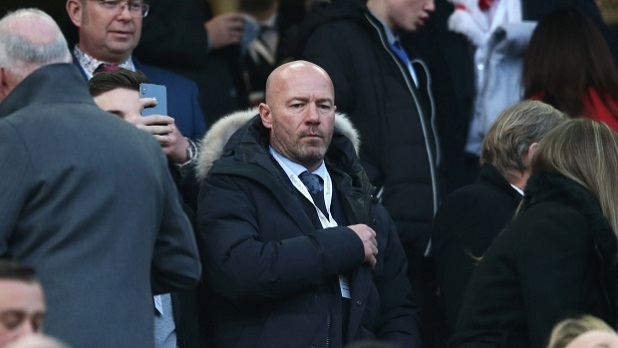

International career
Shearer's international career began in 1990 when he was handed a callup to the England under-21 squad under Dave Sexton. During his time with the squad, he scored 13 times in 11 games; a record return which is still unbeaten. The striker's goals at this level, coupled with his club form, meant he was soon promoted to the senior squad by coach Graham Taylor. Marking his debut in the 2–0 win against France in February 1992 with a goal, he made his only appearance for the England B team a month later. Due to replace Gary Lineker, who retired from international action after UEFA Euro 1992, in the England attack, Shearer played only intermittently in the qualifying campaign for the 1994 FIFA World Cup due to injury and the team failed to reach the competition finals.
UEFA Euro 1996 was a more positive experience for both Shearer and England. With England not required to qualify as hosts, Shearer had not scored in 12 games in the 21 months prior, and even his overall goalscoring record for England did not look too impressive so far; five goals in 23 games.
However, he found the net in the 22nd minute of the first game, against Switzerland. Scoring once in the following game against Scotland and twice in a 4–1 win over the Netherlands, Shearer helped England to progress to the next stage in front of their own fans in Wembley.
In the quarter-finals, England were outplayed by Spain but got through to a penalty shootout after a goalless draw. Shearer scored the first England penalty, while the Spaniards failed to score from two of theirs, sending England into the semi-final against Germany. Shearer headed England into the lead after three minutes, but the Germans quickly equalised and the match went to penalties again. This time, Germany won from the spot; although Shearer scored, his teammate Gareth Southgate missed his kick and England were eliminated. Shearer's five goals made him the competition's top scorer, and together with teammates David Seaman and Steve McManaman, was listed in the official UEFA team of the tournament.
The new England manager Glenn Hoddle appointed Shearer captain for the 1998 FIFA World Cup qualifier against Moldova on 1 September 1996, and the player held onto the captaincy after scoring once in that match and twice in the following game against Poland. He scored a total of five goals in England's successful qualification campaign for the World Cup; adding strikes against Georgia and away to Poland to his tally. Shearer was sidelined for much of the 1997–98 season, but recovered to play in the World Cup finals. With Michael Owen replacing Teddy Sheringham as Shearer's strike partner, Shearer's return saw him score England's first goal of the tournament, in a 2–0 win over Tunisia, his only goal in the three group matches. England faced long-time rivals Argentina in the second round. Shearer scored a first-half equaliser from the penalty-spot before David Beckham was sent off early in the second half. In the final minutes of the game Sol Campbell headed in what could have been the winning goal only for the referee to disallow it due to Shearer having elbowed goalkeeper Carlos Roa. The scores tied 2–2, the game went to penalties. Shearer scored again, but England were eliminated after David Batty's shot was saved by the Argentina goalkeeper. This defeat ended England's participation in what was to be Shearer's only World Cup tournament.
In September 1999, Shearer scored his only England hat-trick in a UEFA Euro 2000 qualifier against Luxembourg. This helped England reach a play-off against Scotland; England won the game over two legs and in doing so qualified for the European Championships. By now, Shearer was approaching his 30th birthday, and he announced that he intended to retire from international football after the Euro 2000 tournament.
Shearer did not score in England's opening 3–2 defeat against Portugal, but did so as England defeated Germany 1–0 in Charleroi, ensuring that England beat their European neighbours for the first time since the 1966 World Cup Final. To remain in the tournament, England only required a draw against Romania in the final group match, and Shearer scored a penalty as England went in at half-time 2–1 up, but Romania ultimately won 3–2. England's tournament was over, and so was Shearer's international career. From his 63 caps, he captained the team 34 times and scored thirty goals; joint-fifth in the England all-time goalscorers list with Nat Lofthouse and Tom Finney. Shearer remained in international retirement despite speculation of a return during the 2002 World Cup and 2004 European Championship campaigns, and further declined an offer to be assistant manager to Steve McClaren after the 2006 World Cup – a position ultimately filled by Terry Venables.